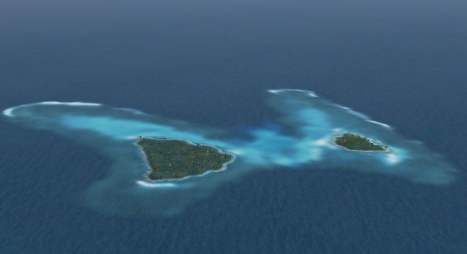
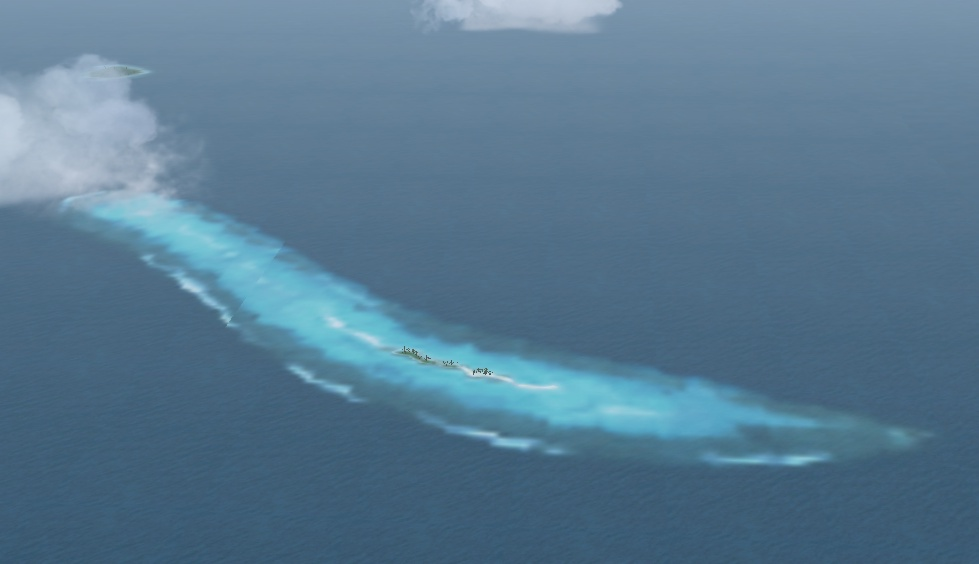
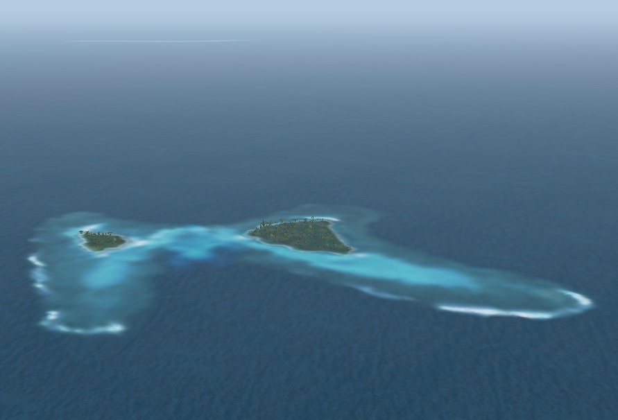
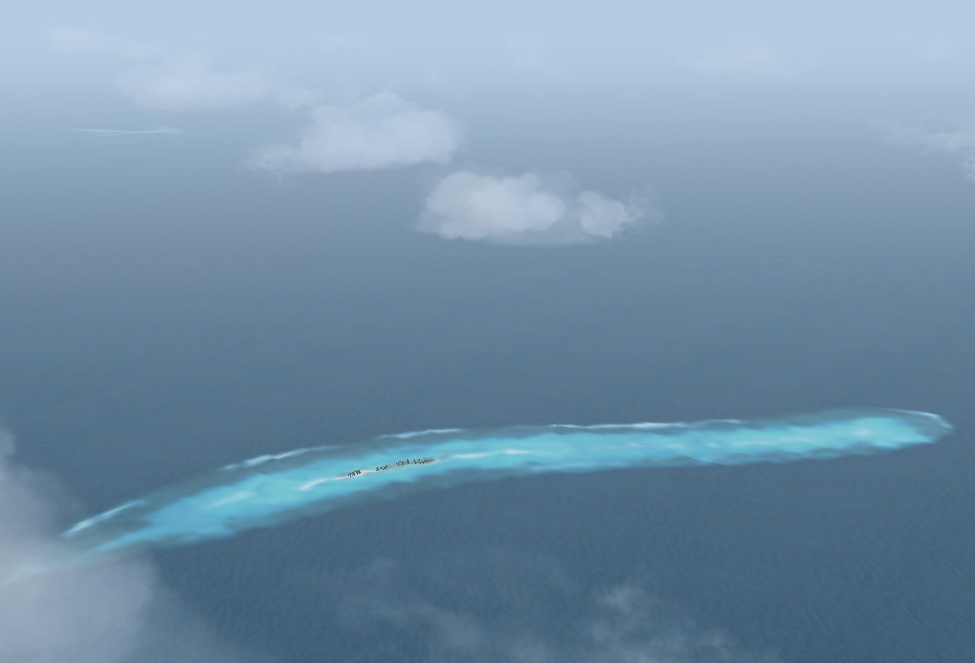

１辺が 2km の矩形に収まってしまうほど小さな島です。
地図にも載っていません。
しかし，実在の島です。
美しさ，形状とも一度見たら忘れることの出来ない島になるのではないでしょうか。

こちらはバタフライアイランドの東に位置する通称イモムシ島です。
このイモムシ島が大きくなるとバタフライアイランドに成長します (^^;
冗談はさておき，こちらの島もユニークです。
島自体は小さく細長く，滑走路も作れないような島ですが，
リーフの見事なこと...絶景です。

反対側から眺めたバタフライアイランドです。遠くにイモムシ島が見えます。

イモムシ島からバタフライアイランドを望んだショットです。
バタフライアイランドというのは通称ですと触れたとおり英語名もあります。
しかし，ここにその名前を書いてしまうとせっかくの夢が冷めてしまうほど
興ざめな名前です。確かになるほどとは思うのですが...(^^;
ですからここでは，あくまでもバタフライアイランドで通してみました。